Deluxe
Grant
- Letto king-size
- Doccia da 1,8 m con soffione a pioggia e doccetta
- Primo piano

Sarah e Daniel vi danno il benvenuto al Garden Park, un’accogliente Guest House nel cuore di Grantown-on-Spey. Costruita nel 1868 e immersa in un rigoglioso giardino di circa 2.000 m², la nostra casa si trova in una posizione ideale, a soli tre minuti a piedi dalla High Street. Vi offriamo un piacevole soggiorno in un ambiente curato, rilassante e familiare, dove potrete sentirvi davvero a casa. Saremo felici di accogliervi e rendere speciale il vostro soggiorno al Garden Park!
La casa
Sarah e Daniel vi danno il benvenuto a Grantown-on-Spey, nel cuore delle splendide Highlands scozzesi, e al Garden Park Guest House, un’elegante dimora d’epoca dal carattere autentico e dall’atmosfera accogliente. Costruita nel 1868, la casa è immersa in un curato giardino di circa 2.000 m² e gode di una posizione tranquilla, a pochi passi dal campo da golf di Grantown, dai sentieri lungo il fiume Spey e dalle suggestive pinete della zona. La High Street, con i suoi negozi indipendenti, ristoranti e pub tradizionali, si raggiunge comodamente in soli tre minuti a piedi.
Grantown-on-Spey si trova all’interno del Cairngorms National Park, in una posizione ideale per esplorare Strathspey, Badenoch, lo Speyside, Moray, Nairnshire e i magnifici paesaggi dei Cairngorms. È il punto di partenza perfetto per scoprire le Highlands con calma e godersi un soggiorno piacevole, anche di più giorni.
Licenza Home Sharing, n. HI-70000-R
Camere
Tutte le sei camere dispongono di bagno privato, sono arredate individualmente con cura e mantenute secondo standard elevati. I letti di qualità, il riscaldamento centralizzato e gli scaldaletto elettrici garantiscono un soggiorno all'insegna del comfort e del relax. In ogni camera troverete inoltre un asciugacapelli, una TV e una selezione di tè e caffè, per sentirvi come a casa. Tutte le camere sono disponibili anche per uso singolo.
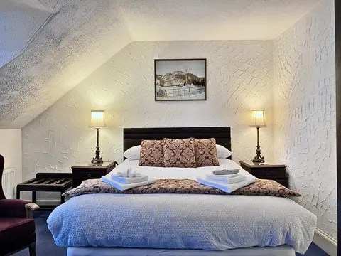
DeluxeGrant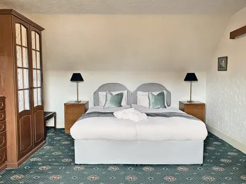
SuperiorMacDonald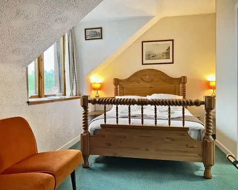
MatrimonialeFraser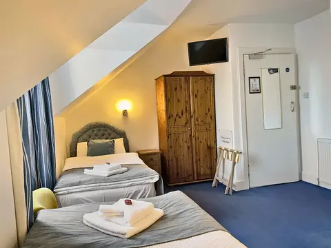
TwinMacKay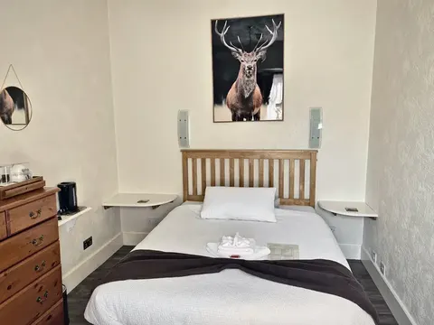
Matrimoniale · piano terraSutherland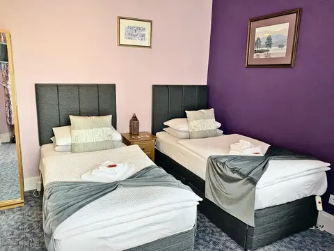
Twin · piano terraMathieson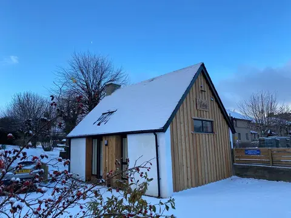
Self-cateringButterfly Cottage
Deluxe

Superior


Matrimoniale · piano terra

Twin · piano terra
I prezzi variano in base alla stagione, alla camera e alla durata del soggiorno, e per i soggiorni più lunghi i nostri prezzi potrebbero sorprendervi piacevolmente. I prezzi attuali li vedete verificando la disponibilità.
Il nostro cottage
Immerso nel verde del Garden Park, Butterfly Cottage è una graziosa casa vacanze con angolo cottura, ideale per due adulti. Può ospitare anche fino a due bambini di massimo 10 anni oppure un bambino fino a 12 anni. Situato al piano terra, con accesso direttamente dal livello del giardino, il cottage offre una comoda doccia walk-in e un letto matrimoniale rialzato, sotto il quale si trova un ampio spazio per riporre i bagagli. Butterfly Cottage è inoltre l'unico alloggio della nostra struttura in cui sono ammessi anche gli amici a quattro zampe, il vostro cane è il benvenuto!
Licenza Secondary Letting HI-70001-R
State pensando a un soggiorno più lungo o viaggiate in gruppo? Contattateci per conoscere le nostre tariffe speciali per soggiorni prolungati, le offerte fuori stagione e le condizioni riservate ai gruppi. Per occasioni speciali come feste di famiglia, matrimoni o altri eventi, avete inoltre la possibilità di riservare l'intera casa in esclusiva, godendo così di tutti gli spazi in totale privacy. Saremo felici di aiutarvi a organizzare il vostro soggiorno o evento nelle splendide Highlands!
Colazione
Crediamo che le due cose più importanti per un soggiorno piacevole siano un letto davvero confortevole e una buona colazione.
Ogni mattina potrete scegliere liberamente dal nostro menù ciò che più vi piace. Prepariamo ogni colazione al momento e su ordinazione, proprio per voi. Un modo semplice per offrirvi prodotti sempre freschi e ridurre al minimo gli sprechi alimentari. Anche i dettagli fanno la differenza, i nostri funghi e pomodori vengono messi in forno 90 minuti prima della colazione, per essere serviti al momento giusto, caldi e appena preparati.
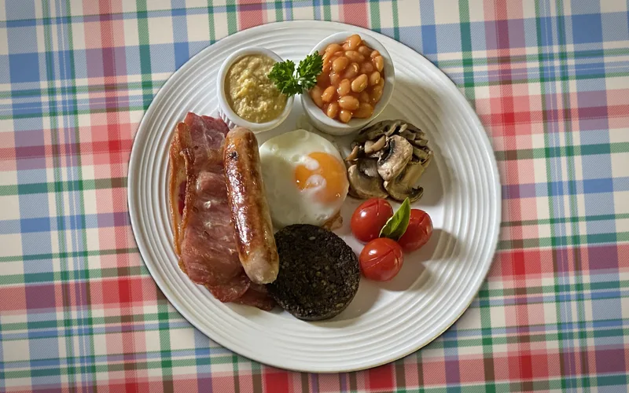
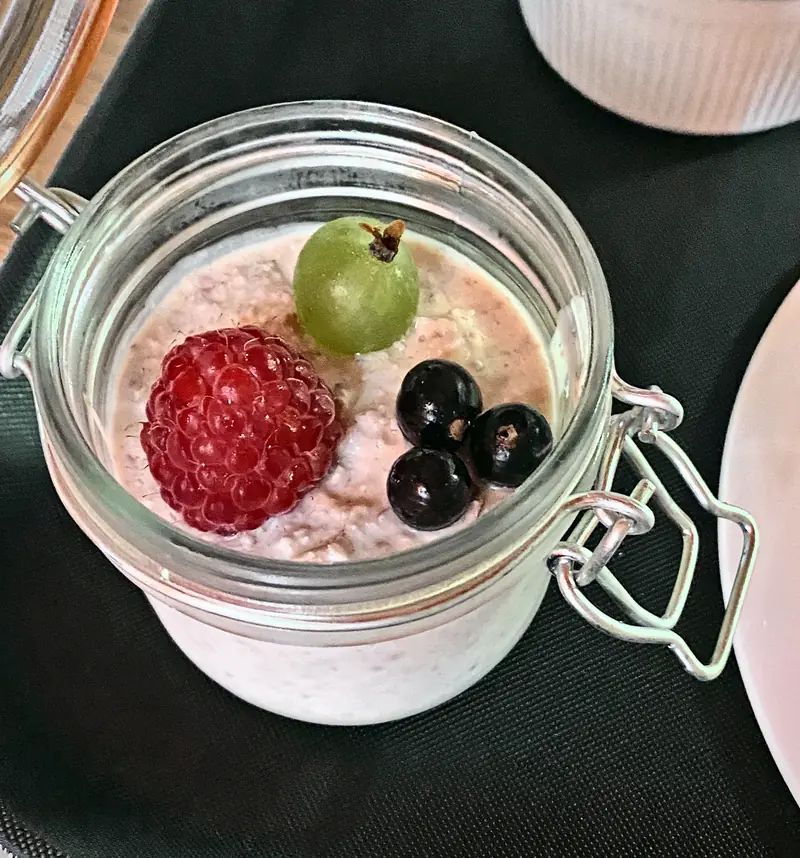

Durante il soggiorno
Dopo un lungo viaggio in auto, l'ultima cosa che si desidera è dover uscire di nuovo per cercare qualcosa da mangiare. Per questo vi proponiamo il nostro Wee Fancy Brügel: una gustosa specialità rustica di ispirazione svizzera, servita su una croccante baguette di pasta madre cotta su pietra e disponibile in quattro diverse varianti. Non un semplice spuntino, ma un vero pasto, sostanzioso e genuino, pensato per chi ha davvero fame!
Il Wee Fancy Brügel è disponibile dal lunedì al sabato, esclusivamente per gli ospiti del Garden Park e del Butterfly Cottage. È necessario prenotarlo almeno 24 ore prima dell'arrivo. Tutte le informazioni e i dettagli sono riportati nel PDF che riceverete insieme alla conferma della prenotazione.
Dopo una giornata trascorsa alla scoperta delle Highlands, cosa c'è di meglio di un buon caffè? Per i nostri ospiti prepariamo con piacere Iced Coffee, Cappuccino, Latte Macchiato ed Espresso.
Vi piacerebbe portare a casa un pezzetto del Garden Park? Abbiamo selezionato alcuni piccoli souvenir di Sarah e Daniel, perfetti anche come regalo, dal miele delle Highlands agli originali attaccapanni realizzati con vecchie botti di whisky.


Offerte & novità

Tre generazioni. Una vacanza indimenticabile in Scozia.
Regalatevi una vacanza speciale nelle splendide Highlands scozzesi, da vivere insieme a tre generazioni della vostra famiglia! Con la nostra offerta Generation Getaway, prenotando tre camere per quattro notti, la terza camera è gratuita per i bambini dai 6 agli 11 anni.
In questo modo ognuno avrà il proprio spazio, pur rimanendo tutti vicini. I nonni potranno trascorrere momenti preziosi con i nipoti, mentre i genitori potranno concedersi un po' di tempo da dedicare a loro stessi. E per chi desidera ancora più privacy, c'è anche il Butterfly Cottage, a soli 30 secondi a piedi dalla casa principale.
Il Generation Getaway è disponibile su richiesta e previa verifica della disponibilità. Scriveteci un'e-mail. Saremo felici di pianificare insieme a voi una vacanza in famiglia da ricordare!
Scriveteci26 – 30 dicembre 2026
I giorni tra Natale e Hogmanay. Il momento perfetto per rallentare.
3 notti al prezzo di 2 oppure 4 notti al prezzo di 3, nelle nostre camere MacDonald (Superior) e Grant (Deluxe).
Tra Natale e Hogmanay, quei giorni un po' sospesi in cui nessuno sa più esattamente che giorno sia, perché non concedersi una fuga nelle Highlands scozzesi? Qualche giorno lontano dagli impegni, senza orari e senza dover essere da nessuna parte.
Trascorrete le giornate passeggiando tra i boschi di Anagach Woods, per poi tornare al calduccio nel nostro salotto. Rannicchiatevi con un buon libro o sfidatevi a un gioco da tavolo davanti al camino. Al mattino vi aspetta una vera colazione, mentre la lista delle cose da fare può tranquillamente restare a casa.
Niente programmi. Niente fretta. Solo il piacere di una piccola fuga invernale nelle Highlands.
L'offerta è valida per soggiorni dal 26 al 30 dicembre 2026, secondo disponibilità.
Disponibilità per Twixmas26 dicembre 2026 – 4 gennaio 2027
Festeggiate giovedì. Prendetevela comoda venerdì. Godetevi tutto il weekend.
Perché rimettersi subito in viaggio dopo i festeggiamenti di Hogmanay? Venite a Grantown-on-Spey e accogliete il nuovo anno nel più autentico stile scozzese! Quest'anno Hogmanay cade di giovedì: l'occasione perfetta per trasformare una notte di festa in un lungo weekend nelle Highlands.
Tradizionalmente, Grantown-on-Spey festeggia il Capodanno con una festa in strada nella piazza principale, The Square, a pochi passi dal Garden Park. Niente taxi, niente attese e niente pensieri, dopo i festeggiamenti vi basteranno pochi minuti a piedi per tornare al vostro letto caldo e confortevole.
E la mattina dopo? Nessuna fretta di ripartire! Godetevi una buona colazione senza guardare l'orologio, esplorate le Highlands nella loro veste invernale e approfittate di qualche giorno in più per rilassarvi e festeggiare l'inizio del nuovo anno.
Festeggiate Hogmanay. Dormite a lungo. Restate un po' di più.
Il Garden Park sarà aperto dal 26 dicembre 2026 al 4 gennaio 2027.
Disponibilità per HogmanayLa zona
Fondata nel XVIII secolo, Grantown è la capitale storica dello Strathspey e una base quasi perfetta nelle Highlands per gite, whisky, natura e costa. Dal 2003 la cittadina fa parte del Cairngorms National Park, il parco nazionale più grande del Regno Unito. Aviemore si raggiunge in auto in circa 22 minuti, Loch Morlich in circa 30 minuti.
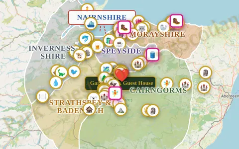
La nostra mappa interattiva Le oltre 50 idee per gite preferite di Sarah e Daniel a Grantown-on-Spey e dintorni. Apri la mappa Dati della mappa © collaboratori di OpenStreetMapGli Anagach Woods e lo Speyside Way sono a tre minuti a piedi dalla nostra porta, e siamo il Guest House più vicino al sentiero. Cervi, lontre, delfini, aquile reali, falchi pescatori e martore vivono nella zona, e il centro RSPB di Loch Garten è a pochi minuti di macchina.
Nove distillerie e una bottaia artigianale sul Malt Whisky Trail, tra cui The Cairn, la distilleria di Grantown. Trovate più informazioni su maltwhiskytrail.com.
Otto campi da golf vicini, a Grantown, Carrbridge, Boat of Garten, Abernethy, Newtonmore, Kingussie, Aviemore e Craggan. Per mazze e scarpe abbiamo un deposito chiudibile a chiave e un locale per asciugare. Consigli per il golf sulla nostra mappa.
Ballindalloch Castle, Cawdor Castle e il campo di battaglia di Culloden sono tutti a meno di un'ora. Il Grantown Museum è proprio dietro l'angolo.
Non serviamo pranzo né cena, ma con ogni prenotazione ricevete un PDF con tutti i ristoranti e i caffè del posto. Che siate vegani o amiate carne e pesce, Grantown offre una grande scelta, e vi consigliamo volentieri i nostri posti preferiti.
La pesca si può organizzare con una guida locale durante il soggiorno. Equitazione, pony trekking, birdwatching, sci, snowboard e rafting sono tutti nelle vicinanze. Consigli per la pesca sulla nostra mappa.
La nostra mappa interattiva comprende più di 50 mete scelte a mano e idee pronte per gite di un giorno, in 8 categorie su 4 mappe chiare e facili da usare.
Scoprite la mappa interattiva dello Strathspey & Badenoch, dello Speyside, dei Cairngorms e della costa del Moray.
Apri la mappa interattivaSostenibilità
Grantown-on-Spey è fatta per restare un po' più a lungo. Da qui le gite partono in tutte le direzioni come le punte di una stella, verso lo Speyside e le sue distillerie, Aviemore e le montagne dei Cairngorms, Tomintoul, Elgin, Nairn e la costa del Moray, e Inverness, tutto a meno di un'ora. Disfate le valigie una volta sola e passate le giornate a scoprire invece che a fare bagagli e guidare.
Collaboriamo da vicino con Green Tourism e abbiamo il loro riconoscimento Gold. Dalla stagione 2024 i pannelli solari sui lati sud e sud-est della casa aiutano ad alimentare il Garden Park, e abbiamo sostituito tutti i serbatoi dell'acqua. Se viaggiate con un'auto elettrica, potete ricaricarla alla nostra colonnina con l'app Tap Electric. Abbiamo anche un nostro orto di erbe aromatiche e un giardino fiorito amico delle api, compriamo locale quando possiamo, riduciamo imballaggi e rifiuti e puliamo a vapore dove è possibile.
Ogni notte in più significa un lavaggio in meno di lenzuola e asciugamani. Questo aiuta a risparmiare acqua, energia e detersivo, e vi lascia più tempo per conoscere Grantown-on-Spey e i Cairngorms invece di passare di corsa.

Buono a sapersi
Nessuna sorpresa, nessuna clausola nascosta in un PDF. Se c'è qualcosa da chiarire, chiamateci o scriveteci.
Marzo – Ottobre
e dal 26 dicembre al 4 gennaio
Siamo aperti da marzo a ottobre, e dal 26 dicembre al 4 gennaio per Natale e Capodanno. Per il resto, da novembre a febbraio la casa è chiusa, perché la nostra vecchia casa in granito impiega molto tempo a scaldarsi.
Su richiesta possiamo aprire la casa in inverno per gruppi di almeno sei persone con un soggiorno minimo di tre notti.
1ª notte
acconto per camera
Le prenotazioni sono confermate con un acconto per la prima notte per camera. Accettiamo contanti (GBP), Mastercard e Visa, bonifico e link di pagamento Stripe. È possibile anche il pagamento contactless.
16 – 19
check-out entro le 10
Il check-in è tra le 16 e le 19, il check-out entro le 10. Ogni giorno scegliete la colazione e l'orario sul nostro foglio della colazione.
da £14
per camera
Se cancellate 14 o più giorni prima dell'arrivo, la penale è di £14 per camera.
Se cancellate tra 3 e 13 giorni prima dell'arrivo, la penale è di £50 per camera.
Se cancellate meno di 3 giorni prima dell'arrivo, la penale è del 75% dell'importo totale della prenotazione.
Se non arrivate o riducete la prenotazione dopo il giorno di arrivo, viene addebitato l'intero importo della prenotazione.
Per prenotazioni oltre £1,000 l'acconto è del 40%. Le prenotazioni fatte 4 giorni o meno prima dell'arrivo si pagano per intero e non sono rimborsabili.
Consigliamo vivamente un'assicurazione di viaggio.
12 gradini
o un sentiero in leggera salita
La casa è leggermente rialzata, a circa 30 metri dalla strada. All'ingresso si arriva da un sentiero in leggera salita o da 12 gradini bassi. La casa non è accessibile in sedia a rotelle.
Gli ospiti con deambulatore o ausilio per camminare possono accedere al piano terra, e consigliamo la camera Sutherland, con doccia walk-in. Anche la camera Mathieson è al piano terra, ma la sua doccia ha un gradino di 15 cm.
£39
nel Butterfly Cottage
Viaggiate con il vostro cane? Nel Butterfly Cottage è il benvenuto, lì tutta la famiglia ha spazio per sentirsi a casa. Il supplemento è di £39 per prenotazione e per settimana.
fino a 14
ospiti in gruppo
Locale per asciugare e deposito chiudibile a chiave, e siamo il Guest House più vicino allo Speyside Way. Possiamo organizzare il trasporto dei bagagli al vostro prossimo alloggio, basta chiedercelo prima dell'arrivo. I gruppi fino a 14 persone sono benvenuti su accordo.
8 +
anni in su
I bambini dagli 8 anni in su sono i benvenuti a Garden Park. Per i bambini dagli 8 ai 15 anni sono disponibili tariffe ridotte.
Stufa a legna
nella sala comune
In ogni camera trovate tè e caffè, set di cortesia in bagno, una TV e un asciugacapelli. Siete i benvenuti nel nostro salotto per gli ospiti, dove trovate giochi da tavolo, libri e informazioni sulla zona. Nei giorni più freddi la stufa a legna rende la stanza calda e accogliente.
Galleria


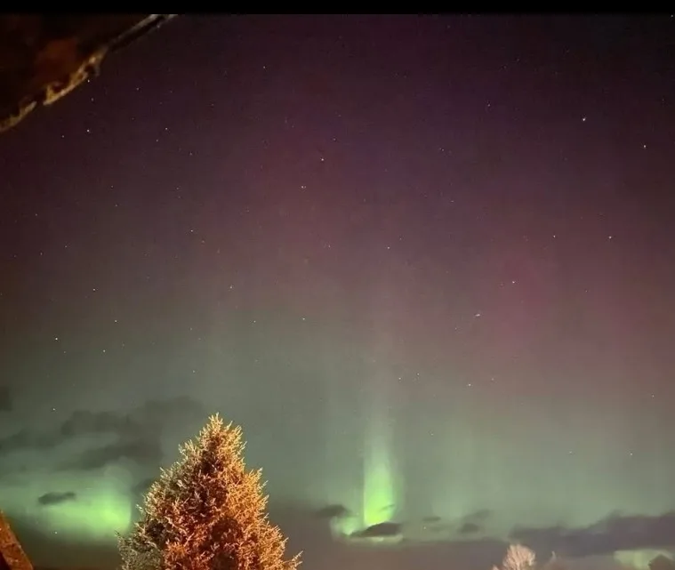


Chi siamo
Sarah e Daniel non vedono l'ora di accogliervi al Garden Park. Vi aiutiamo volentieri con idee sulla zona, consigli pratici di viaggio e i nostri posti preferiti, così vi godete al massimo il soggiorno nelle Highlands.

E Lucy? La nostra dalmata vive con noi nella parte privata della casa e viene solo molto raramente nel Guest House. Se volete conoscerla, chiedete pure, e lei verrà volentieri a salutarvi.
Parliamo inglese, tedesco, svizzero tedesco e italiano.
Essere padroni di casa, l’unico mestiere in cui il mondo intero viene a trovarti. Lo adoriamo semplicemente!
Recensioni degli ospiti
5/ 5
Da oltre 240 recensioni verificate · leggetele tutte
“Spotlessly clean, peaceful location just a very short walk to facilities. Host very welcoming and helpful.”
“The breakfast was first-class, the hosts were welcoming and friendly.”
„Würden euch jeder Zeit weiter empfehlen. Es waren schöne Tage, die wir sehr genossen haben.“
„Wir vermissen euer Frühstück mit der tollen Auswahl und dem selbstgebackenen Brot. Und eure Herzlichkeit …“
 Traveller Review Award 2026Booking.com, 10 su 10.
Traveller Review Award 2026Booking.com, 10 su 10.
Prenotando direttamente non c'è nessuna commissione per le piattaforme, e parlate direttamente con noi.
Verifica disponibilitàFAQ
Grantown si trova al centro di più regioni. Gli ospiti possono facilmente fare escursioni a raggiera verso Speyside, Cairngorms, costa di Moray, area di Inverness, Strathspey e Aberdeenshire. Molti punti di interesse sono raggiungibili in 20-50 minuti. Ogni giorno può offrire paesaggi ed esperienze completamente diversi. Volete qualche idea per organizzarvi? La mappa interattiva di Sarah e Daniel può esservi di grande aiuto.
Sì. Garden Park si trova in una tranquilla via laterale. Il centro è a circa 3 minuti a piedi. Tutti i ristoranti sono raggiungibili in 1-10 minuti a piedi. Diversi sono a meno di 4 minuti.
Circa 50 minuti in auto, via Nairn o via A9. Ci sono anche i mezzi pubblici, autobus regolari collegano Grantown-on-Spey e Inverness.
Circa 22 minuti in auto. Loch Morlich, a Glenmore vicino ad Aviemore, con la sua spiaggia di sabbia ai piedi dei monti Cairngorm, dista circa 30 minuti.
Sì. Opzioni vegetariane e vegane fresche sono disponibili ogni giorno.
Certo che si può fare lo Speyside Malt Whisky Trail in un giorno. La vera domanda è se ve ne ricorderete il giorno dopo? 😄 Tra le tante distillerie, i centri visitatori e le degustazioni, il tempo vola. Il nostro consiglio è di visitare meno distillerie e godersele di più. Le trovate tutte sulla nostra mappa Speyside Distilleries. Daniel offre inoltre, su richiesta, un servizio autista per un massimo di 4 persone. Poiché le date si esauriscono rapidamente, soprattutto in alta stagione, è consigliabile prenotare almeno 6 settimane prima.
Sì, davvero, e non hanno mai chiesto un biglietto d'ingresso! Il posto migliore è Chanonry Point vicino a Fortrose, dove i tursiopi si avvistano regolarmente, soprattutto 1,5-2 ore dopo la bassa marea. Portate un binocolo e abbiate pazienza, la ricompensa vale l'attesa.
Per evitare siti truffa di terze parti o costi di gestione inutili, richiedete l'ETA solo tramite i canali ufficiali del governo britannico. Potete farlo online direttamente sul sito ufficiale gov.uk/eta/apply, oppure tramite l'app ufficiale 'UK ETA' (App Store e Google Play), che permette di scansionare facilmente il chip biometrico del passaporto e il viso. Tenete presente che la richiesta ufficiale costa £20. Controllate sempre che l'indirizzo del sito termini esattamente con .gov.uk, perché i siti indipendenti spesso sembrano identici alle pagine ufficiali ma applicano elevati costi nascosti.
Chi lo sa? Non è stata una gran battuta, vero? 😉 La verità è che nessuno può rispondere a questa domanda. La Scozia ha più di 140 distillerie e ognuno ha gusti diversi. Forse amate un whisky torbato delle isole, oppure siete alle prime armi. In tal caso, lo Speyside è uno dei posti migliori per iniziare. Perché non soggiornare da noi ed esplorare più di 50 distillerie in tutta la Speyside e lo Strathspey? Una splendida avventura per gli amanti del whisky e per i futuri appassionati. E se il gin vi piace di più, siete fortunati, perché nei Cairngorms e nei dintorni si producono anche alcuni gin eccellenti.
Sì, la regione produce gin eccellente e premiato a livello internazionale. Kinrara, per esempio, ha vinto il titolo “World's Best Signature Botanical” ai World Gin Awards 2025 con il Caper Artist Edition. Oppure Glenrinnes, con una distilleria moderna e la certificazione 100% biologica. E a proposito, anche nel 2026 Kinrara fa il botto e conquista il titolo “World's Best Gin Design” ai World Drinks Awards di Londra.
Altre domande e risposte nella nostra mappa interattiva.
Contatti
+44 1479 873235
relax@garden-park.co.uk
what3words include.milky.baths
Inverness e la costa del Moray sono a circa 50 minuti in macchina. Che arriviate in auto, traghetto o treno, o che vi spostiate senza auto in autobus e taxi, trovate tutto nella nostra mappa interattiva.
Come arrivare a Grantown-on-Spey